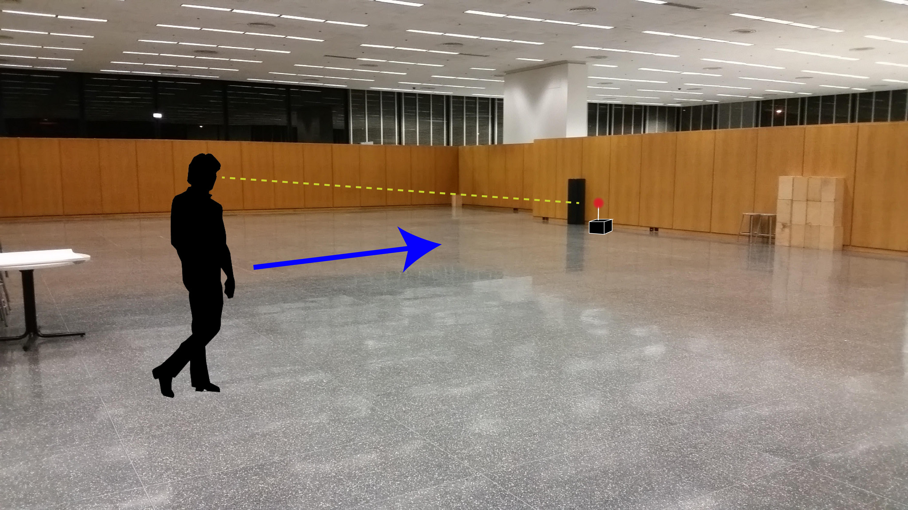
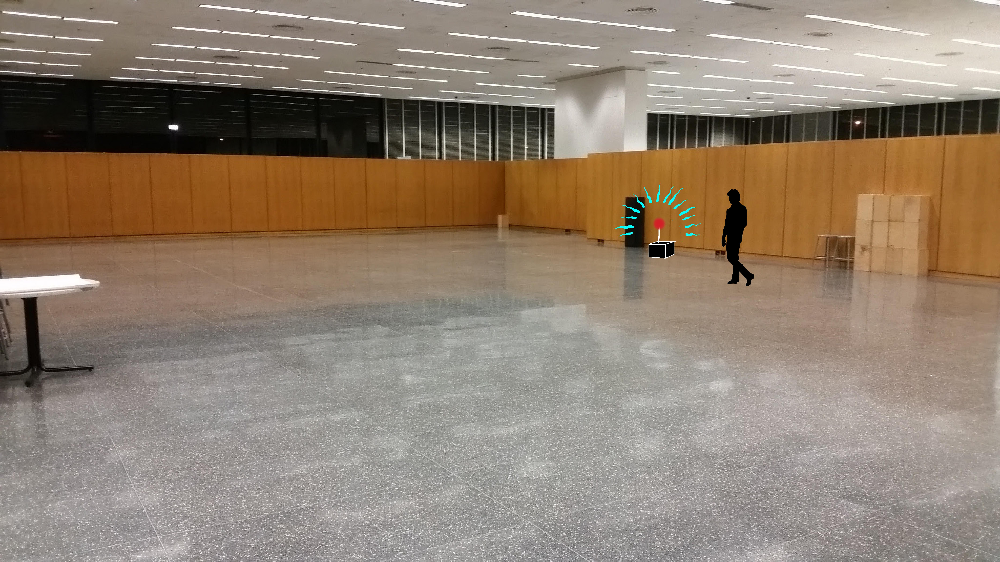
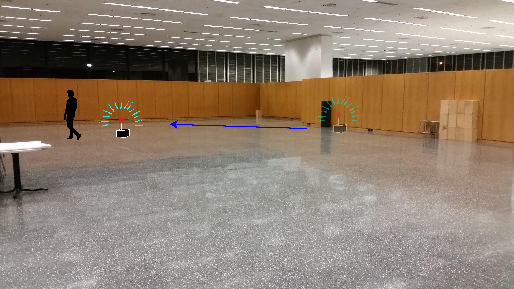

Fall of 2015 I took an arch elective, Architectural Robotics, we learned how to
program with and Arduino and we had to design a robot with certain qualities that
make an, otherwise dead space, more interesting. For my idea I wanted to design
a robot that would follow an individual around with a motion sensor.
The robot would be placed in a space that normally does not get too much activity.

When one notices the robot sitting in the space one would approach it.

When one gets close enough to the robot the robot will sense their presence.

The robot will then start to follow the individual around the space.